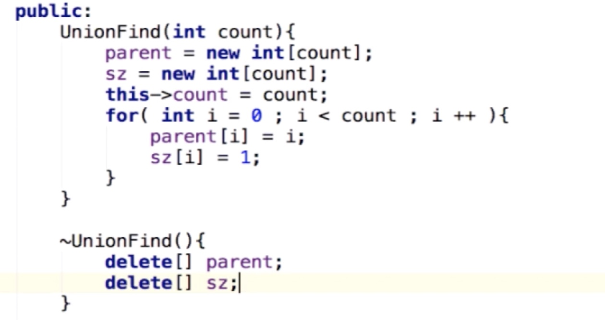
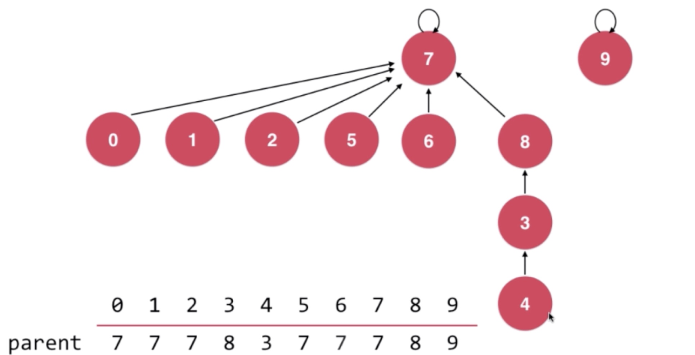

6 章：并查集（Union Find）-- 特殊的树形结构
6 章：并查集（Union Find）– 特殊的树形结构
1. 应用
1. 处理连接问题
- 网络中节点间的连接状态
- 用户网络两人是否相识
- 交通网络两点是否连通
- 数学中的结合类实现
- 并查集中的并类似于集合中的并集
- 可以用并查集（集合中的点存在联系，id 一致或者状态相同）解决需要用数学集合的思路来解决的问题，并查询节点在集合中的状态
2. 连接问题与路径问题的比较
- 看一个节点是否有一个路径能到达另一节点
- 连接问题比路径问题少，只关注是否连接，不需求具体路径
- 因此，连接问题更方便用并查集实现，因为并查集只关心节点是否连接，类似堆只关心最大或者最小元素，二分查找只关心要找的那个元素（不需要全部遍历一遍）
2. Quick Find
1. 并查集支持的操作
- union(p,q)
- find(p)
2. 并查集可以回答的问题
- isConnected(p,q)
3. Quick Find实现
原理
- 使用数组来表示并查集，并使用数组中存储的值来表示状态，例如下面，值为 1 的节点或者值为 0 的节点都是相连通的
- 这种实现因为可以通过数组索引在 O(1)时间内获取连接状态，所以称为 Quick Find
- 使用数组来表示并查集，并使用数组中存储的值来表示状态，例如下面，值为 1 的节点或者值为 0 的节点都是相连通的
实现
- 数据结构
- Find（） 和 isConnected（）
这种实现获取节点状态和判断连通性都很快 - Quick Find 下的 Uniof()
- 如上图，首先0, 2，4，6，8 是连接的，1，3，5，7，9 是连接的，如果想把 1 和 2 连接，实际上最终这所有的元素都连接在了一起，不能只修改 1 或者 2 本身的状态，不然他们与原来相连的节点就断开连接了，所以 union 操作实际上要修改 O(n)级别的节点状态，算法复杂度为O(n)
- 数据结构
3. Quick Union （常用实现方法）
原理
- 每一个元素看做一个节点，每个节点拥有一个指向父亲的指针
- 子节点指向父节点，最终指向根节点，根节点则指向自己
- 如果1 节点要与3 连通，1 节点要指向根节点2，而非指向 3；如果另一个并查集（5,6,7）要与并查集连接，只需将这个并查集的根节点指向另一个并查集的根节点即可，即 5 指向 2；如果节点 7 要与 3 连接，也是将 5 指向 2；
- Quick Union 依然可以用数组表示，存储的内容是父节点的 id
- Quick Union union 过程
- 初始状态，每个节点是一个并查集，父节点都指向自己
- Uniof(4,3)
- Union(3,8),因为4 的父节点还是 3，没有变，所以索引 4 存储的还是 3
- Union(9,4),此时不是把 9 指向 4，而是把 9 指向 4 所指向的根节点，即 8，然后索引 9 的父节点更新为 8；为什么确定 8 就是根节点了？因为索引 8 存储的父节点是 8，说明自身指向自身，所以是根节点；9连接到 4 也是连通的，不过会导致树高度增加，不方便将来查找 Find;
- Union(6,2),把 6 节点的根节点指向 2 节点的根节点；
- 初始状态，每个节点是一个并查集，父节点都指向自己
- 由上面过程可见，查找两个节点是否连接，只需要从两个节点开始找到根节点，如果根节点一样，说明节点是连接的；合并操作则是找到各自两个节点的根节点，直接连接在一起即可；这都是对树的某两个分支进行的，效率取决于树的高度，但基本上树的高度要远小于节点个数，所以效率会高些；
实现
- UnionFind类定义
- Find（） 和 isConnected（）
- Union（）找到根节点，进行连接
- UnionFind类定义
Quick Union 基于 size 的优化
- 案例引入：union(9,4) 和 union(4,9)
上节实现的 union 始终是第一个节点连接到第二个节点上，这样导致 union(4,9)产生的数高度比较高，如果是千万节点，影响巨大； - 基于 size 的优化
- 类中增加 size 数组
 - 将 size 小的连接到 size 大的树上去
- 类中增加 size 数组
- 案例引入：union(9,4) 和 union(4,9)
基于 rank 的优化
- 案例引入：union(4,2)
- 按照上面基于 size 优化过的 union 函数，要将 8 指向 7，但是 以 8 为根的树中节点数要少于以 7 为根的树，这样进行 union 操作后得到的树层数较多
 - 如果将 7 指向 8 呢？得到的层数会比较少
- 明显，3 中的 union 是更好的一个方式，能得到层数更少的树，查找更快
- 基于 rank 优化实现
- 数据结构，将 size 数组替换成 rank数组，每个 rank 都初始化为 1，因为初始状态每个只有 1 层；
- 此时，在两个树高度不同时，只需要把 rank 小的指向 rank 大的即可，不需要维护 rank，因为 rank 下的指向 rank 大的并不会导致树的高度发生变化；rank 的维护是在两者 rank 相等的时候进行的，此时随便哪个指向哪个都可以，只不过要维护合并后树根的 rank,树的高度加 1；
- 数据结构，将 size 数组替换成 rank数组，每个 rank 都初始化为 1，因为初始状态每个只有 1 层；
- 案例引入：union(4,2)
4. 路径压缩–另一种优化方式
上面的基于 size 和 rank 的优化都是针对 union 操作的优化，这里路径压缩是针对 find 的优化；
路径压缩过程
find（4）,就是从 4 开始向上遍历找到根节点 0；
路径压缩就是把这个路径缩短，具体思路是，在从 4 开始往上遍历时，如果 4 的父节点不是根节点，那么就把 4 网上挪一级；
如果 4 的父节点3 就是根，那么 4就不往上挪了，还是指向 3；接下来就判断 2 节点的父节点是否是根节点，如果不是，2 节点网上挪；这里跳过了 3（跳了两步），因为在 4 节点逻辑中会判断 3 的父节点是否是根节点，所以如果 3 的父节点不是根节点，那么 3 的父节点肯定是存在的；极端情况，当对 1 节点进行挪动时，跳两步也是没问题的，虽然 0 是根节点，但是 0 节点的父节点指向自身，也是能访问的，相当于 1 挪动到 0 节点的父节点（自身）上，逻辑仍然正确；
路径压缩前后对比
实现，修改 find()
路径压缩优化
上面路径压缩的结果不是最优的，最优结果应该是这样的：- 这种优化的原理是：所有节点都指向他们的根节点，那么从 4 开始，4 应该指向 3 的根节点，3 指向 2 的根节点（这些根节点都是一样的值）；然后 2 指向 1 的根节点，所以这是一个递归过程，即：对 4 优化时，先查找它的父节点的根节点是谁，如果 3 的父节点不是根节点，那么进入下一层递归，找 3 的父节点 2 的根节点是谁，最终找到 1 的根节点是 0，那么此时递归开始返回，2 会指向 1 的根节点0，再返回上一层递归，3 指向 2 的根节点 0，最终 4 指向 3 的根节点也是 0；
- 代码实现：返回值是 parent[p]，并且如果 p==parent[p],返回 parent[p]也是没问题的，因为根节点父节点指向自身；
- 这个压缩方式有递归开销，不一定最终效果比上一个版本好，实际采用哪个，按需而定；
5. 并查集的时间复杂度
经过这些优化后，时间复杂度不是特别好计算，优化后所有节点与根节点的距离都是 O(1) 的（并查集的一个特点，并查集里不是存储的指向孩子的指针，而是指向父亲的指针，一个节点可以有无数个孩子），所以时间复杂度也应该是 O(1)的；但是路径压缩等优化过程中也会有开销，所以不是准确的 O(1)，而是近乎O(1)；优化过程中的开销使用阿尔法函数来表达（具体查资料了解）。